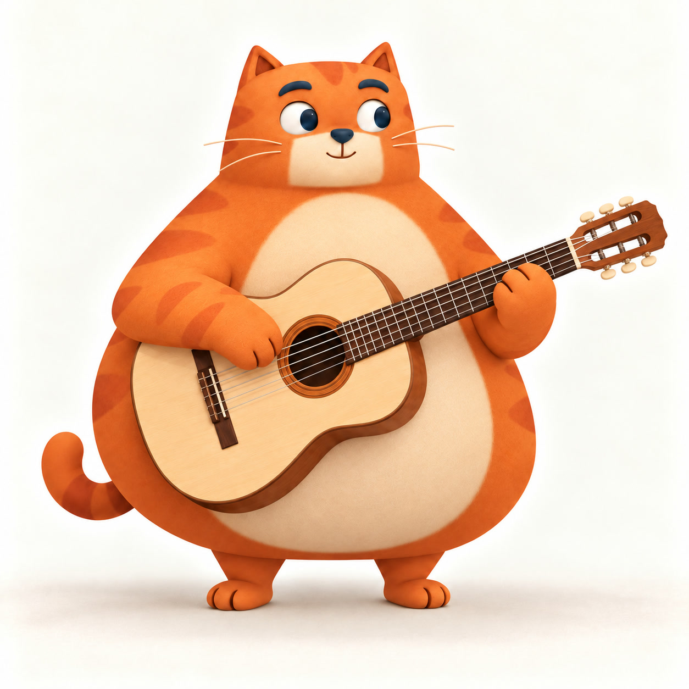
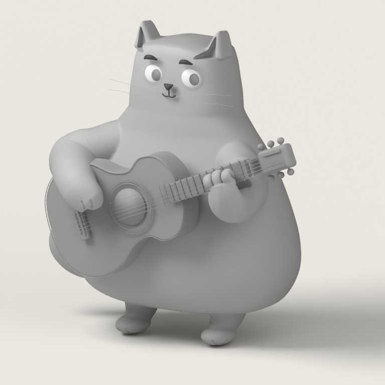
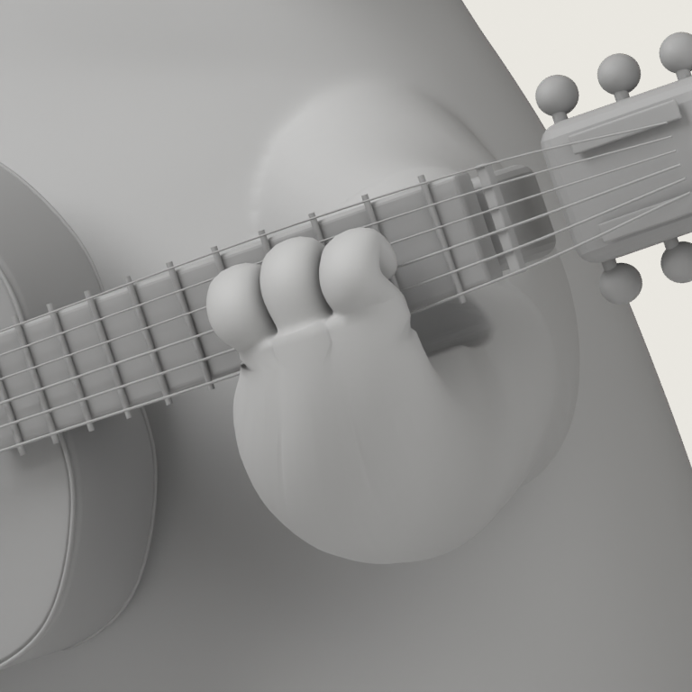

原版
线上形象基准
原版是外观基准。下面是两条3D路线的实际静帧，方便直接看差别；制作中的问题一并列出。
三个视窗同步放大，不改动原始图片。手机可左右滑动。各版本的模型和材质阶段不同，不能据此直接比较性能。
后圆垫和尖折指片已经改善，指根接口仍有硬折线，三方评审还未放行。以下是结构检查图，尚未替换上方彩色版本。


Blender、Godot目前还没有通过验收的新弹奏片段。手指是否清楚、连续按键是否自然、头部是否跟随，都还需要实际视频评审。
打开原版试玩 ↗比例、圆脸和眼神接近原图，可爱，有自己的性格。
短绒细密，边缘柔和；塑料感、毛刺和粗糙接缝都要修。
一次输入有一次清楚动作，快连按仍能看见右手弹奏。
头、眼和耳朵有克制的响应，不机械点头，不打断弹奏。
页面使用实际原图、Blender渲染和Godot原生GPU截图。C20仅眼部静态窄关通过；C23手部仍有接口P0；Godot仅静态迁移验证。本页不宣称整体角色、动作、手机性能或视频导出已完成。查看图片来源与校验值。